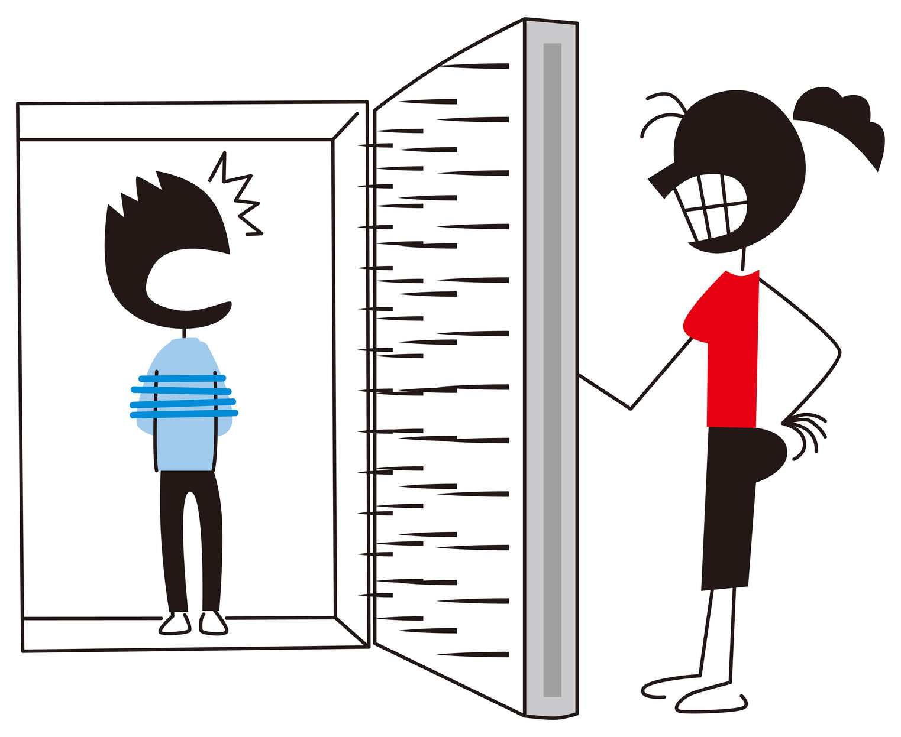

Misandria refere-se à versão, desprezo ou hostilidade especificamente aos homens. Assim como a misoginia, a misandria pode se manifestar de várias maneiras, desde atitudes discriminatórias até expressões de violência. É importante reconhecer que, embora exista misandria, não é tão sistêmica ou historicamente enraizada quanto à misoginia.
Estereótipos Negativos:A misandria pode envolver a propagação de estereótipos negativos sobre os homens, retratando-os de maneira desfavorável e limitando suas capacidades e papéis na sociedade.
Desvalorização das Experiências Masculinas:Em algumas situações, a misandria pode ser expressa através da desvalorização das experiências emocionais e dos desafios específicos enfrentados pelos homens.
Discriminação com Base no Gênero:A misandria pode levar à discriminação com base no gênero, onde os homens são tratados de maneira injusta ou prejudicial simplesmente por serem homens.
